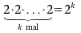
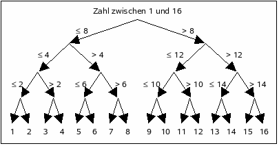

Thomas Seidl, RWTH Aachen
Jost Enderle, RWTH Aachen
Wo ist nur die neue Nelly-CD? Meine große Schwester Linda mit ihrem Ordnungsfimmel hat sie bestimmt schon wieder ins CD-Regal gepackt. Ich habe ihr schon tausend Mal gesagt, dass sie meine neuen CDs draußen liegen lassen soll. Jetzt darf ich wieder alle 500 CDs im Regal einzeln anschauen. Das dauert ewig, bis ich die alle durchsucht habe!
OK, wenn ich Glück habe, finde ich die CD vielleicht schon früher und muss doch nicht auf alle Cover draufschauen. Im schlimmsten Fall hat aber Linda die CD mal wieder ihrer Freundin ausgeliehen: Dann darf ich alle durchsuchen und am Ende wieder Radio hören.
Aaliyah, AC/DC, Alicia Keys, ... hmmm, Linda scheint die CDs nach Künstler sortiert zu haben. Damit sollte meine Nelly-CD wohl leichter zu finden sein. Ich greife einfach mal mitten rein. "Kelly Family", das war wohl zu weit vorne, ich muss weiter hinten suchen. "Rachmaninov", das war wieder zu weit hinten, mal ein bisschen weiter links nachschauen" ... "Lionel Hampton". Noch ein bisschen nach rechts ... "Nancy Sinatra" ... "Nelly"!
Das ging ja jetzt doch ganz flott! Mit der Sortierung reicht es, ein paar Mal hin- und herzuspringen, bis man die CD gefunden hat. Auch wenn die CD nicht im Regal gewesen wäre, hätte man das schnell gemerkt. Wenn wir jetzt aber mal 10.000 CDs haben, muss ich dann wahrscheinlich doch wieder ein paar hundert Mal hin- und herspringen und die CDs anschauen. Ob man das irgendwie ausrechnen kann?
Linda studiert ja seit letztem Jahr Informatik, die hat sicher irgendwo Unterlagen herumliegen, in denen auch etwas Informatives drinsteht. Mal sehen ... unter "Suchalgorithmen" bin ich wohl richtig. Hier wird beschrieben, wie man einen Eintrag in einer gegebenen Menge (hier: CDs) anhand eines Schlüsselwerts (hier: Künstler) sucht. Was ich zuerst versucht habe, nennt sich wohl "sequenzielle" oder "lineare Suche". Wie schon vermutet, muss man hier durchschnittlich die Hälfte der Einträge durchsuchen, bis man den gesuchten Schlüsselwert gefunden hat. Die Anzahl der Suchschritte steigt proportional mit der Anzahl der Einträge, d. h. wenn man doppelt so viel Einträge hat, muss man auch doppelt solange suchen.
Mein zweites Suchverfahren scheint auch einen extra Namen zu haben, "binäre Suche". Bei einem gegebenen Suchschlüssel und einer sortierten Liste von Einträgen fängt man bei dem mittleren Eintrag an und vergleicht dessen Schlüssel mit dem Suchschlüssel. Hat man den gesuchten Eintrag dann schon gefunden, ist die Suche beendet. Ansonsten wird dasselbe entweder für die linke oder die rechte Hälfte der Einträge gemacht, je nachdem, ob der gelesene Schlüssel größer oder kleiner war als der Suchschlüssel, und zwar so oft, bis man entweder den Eintrag gefunden hat oder bis keine Halbierung des Suchraums mehr möglich ist (d.h. man ist an der Stelle angekommen, an der der Eintrag eigentlich stehen müsste). In den Unterlagen meiner Schwester ist auch folgender Programm-Code abgedruckt:
Die Funktion BinaereSuche gibt die Position
von "Schluessel" in Array "A" zwischen "links" und "rechts" aus.
BinaereSuche(A,Schluessel,links,rechts)
| 1 |
| 2 | {Mitte bestimmen, Ergebnis runden} |
| 3 |
| 4 |
| 5 |
| 6 |
| 7 |
Dabei ist A ein "Array"; das ist eine Liste von Daten, in dem die Einträge durchnummeriert sind, so wie im Regal die CD-Positionen. Der fünfte Eintrag in einem solchen Array wird dann zum Beispiel mit A[5] bezeichnet. Wenn unser Regal also 500 CDs enthält und wir nach dem Schlüssel "Nelly" suchen, müssen wir BinaereSuche(Regal, "Nelly", 1, 500) aufrufen, um die Position der gesuchten CD zu finden. Bei der Ausführung des Programms wird dann zunächst "links" auf 251 gesetzt, danach "rechts" auf 375 usw.
Jetzt bleibt noch die Frage, wie viele Suchschritte wir eigentlich durchführen müssen, bis wir den richtigen Eintrag gefunden haben. Wenn wir Glück haben, finden wir den Eintrag schon im ersten Schritt; gibt es den gesuchten Eintrag nicht, müssen wir so oft springen, bis wir die Stelle erreicht haben, an der der Eintrag eigentlich stehen müsste. Wir müssen also überlegen, wie oft man die Liste der Einträge halbieren kann, oder anders herum, wie viele Einträge wir mit einer bestimmten Anzahl von Vergleichen durchsuchen können. Mit 1 Vergleich können wir 2 Einträge durchsuchen, mit 2 Vergleichen dann 4 Einträge, mit 3 Vergleichen schon 8 Einträge. Mit k Vergleichen können wir also  Einträge durchsuchen. Das wären dann für 10 Vergleiche schon 1024 Einträge, für 20 Vergleiche über eine Million und für 30 Vergleiche über eine Milliarde Einträge! Will man "rückwärts" rechnen, d.h. aus der Anzahl von Einträgen die notwendige Anzahl von Vergleichen bestimmen, muss man die Umkehrfunktion zur Zweier-Potenz verwenden, die nennen das den Zweier-Logarithmus und bezeichnen die zugehörige Funktion mit log2. Wenn also mit k Vergleichen 2k = N Einträge durchsucht werden können, braucht man log2 N = k viele Vergleiche für N Einträge. Wenn in unserem Regal also 10.000 CDs wären, dann haben wir log2 10.000 ∼ 13,29. Da es keine "halben Vergleiche" gibt, ergeben sich 14 Vergleiche!
| Das ist ja ganz schön wenig! Heute Abend werde ich Linda mal auf die Probe stellen und sie eine Zahl zwischen 1 und 1.000 raten lassen. Wenn sie in der Uni aufgepasst hat, dürfte sie dafür nicht mehr als 10 Fragen benötigen. (Für das Raten einer Zahl zwischen 1 und 16 mit maximal 4 Fragen kann man wie in dem nebenstehenden Bild vorgehen.) Und falls doch, muss sie mir bei den Deutsch-Hausaufgaben helfen! Jetzt höre ich mir aber erst mal die Nelly-CD an ... |  |